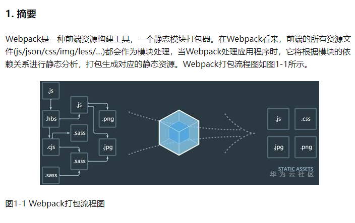

我们的项目逐渐变大，有几十个到上百个JavaScript文件的时候，那问题会更严重，不但有延迟问题，还会遇到很难维护的问题 —
没办法维护上百个文件的依赖关系，所以想法是把js合并成一个文件，开发阶段我仍然是有a.js，b.js和c.js等等这些文件的
，这样才好开发和维护，因为如果开发阶段就合并的话，就相当于我基于一个可能上万行的文件进行开发
这样的代码是没法维护的。
在开发后完成的这个合并的过程就是打包，
代码层面：
体积更小（Tree-shaking、压缩、合并），加载更快 编译高级语言和语法（TS、ES6、模块化、scss） 兼容性和错误检查（polyfill,postcss,eslint） 研发流程层面：
统一、高效的开发环境 统一的构建流程和产出标准 集成公司构建规范（提测、上线）
体积更小（Tree-shaking、压缩、合并），加载更快 编译高级语言和语法（TS、ES6、模块化、scss） 兼容性和错误检查（polyfill,postcss,eslint） 研发流程层面：
统一、高效的开发环境 统一的构建流程和产出标准 集成公司构建规范（提测、上线）